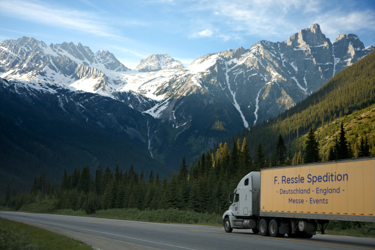

Deutschlandweite Transporte
Täglich bewegen wir Teil- und Komplettladungen deutschlandweit. Termingut und Spezialtransporte sind Anforderungen, die wir kreativ und zeitnah für Sie erledigen.

Für uns bedeutet jahrelange Erfahrung, dass es fast nichts gibt, was wir nicht schon mal gesehen, erlebt und gelöst haben. Vertrauen Sie unserem know-how.
Internationale Transporte — Ihr Englandspezialist
Unsere Spezialität sind tägliche Transporte mit Komplett- und Teilladungen von und nach England, Schottland, Wales und Irland.
Die Zollformalitäten erledigen wir für Sie. Unser Zolllager stellen wir gerne zur Verfügung. Sie werden sehen, wie einfach der Brexit sein kann.
Wer Brexit kann, kann Europa allemal.
Messe & Event Logistik
Wir organisieren die Logistik für Messeauftritte, Events oder Kongresse.
Die logistische Planung erledigen wir individuell mit Ihnen. Dabei organisieren für Sie unter anderem Spezielle Fahrzeuge, Sondergenehmigungen, Terminzustellungen und Kautionen.
Das alles auch am Wochenende mit entsprechenden Genehmigungen. Hebebühnenfahrzeuge, Mitnahmestapler, Kofferfahrzeuge etc. national oder international, Tag oder Nacht. Sie sagen uns, was Sie, wie, wo, wann haben müssen und überlassen den Rest uns.
Diese besonderen Transporte führen wir regelmäßig aus: this page
Rufen Sie uns an: +49 2103 50040
Mailen sie uns: info@ressle.com
Wir freuen uns auf Ihre Anfrage.
Lager
An unseren Standorten in Hilden, Bayern, London & Manchester können Sie unsere großzügigen Lagerräume für Ihre Ware nutzen.

Fuhrpark
Wir stellen Ihnen zur Verfügung:
| Tautliner
| Koffer
| Tieflader
| Kranfahrzeuge
| Joloda-System
| Edscha Verdeck
| offene Sattel
| Mitnahmestapler
| 7.5 to mit Hebebühne
| Sprinter
| Kurierservice |
Qualitätsmanagement
Wir sind nach ISO 9001-XXXX [Zertifikat einfügen]